Guía VPD
Paso a paso
Systems Neuroscience
&
Neurotechnology Unit
1. Información General
El VPD (Vorprüfungsdokument) es un documento preliminar requerido por Uni-Assist para tu aplicación.
Sitio oficial de Uni-Assist (VPD) →
⚠ Importante: La aprobación tarda aproximadamente 6 semanas. ¡Planifica con
anticipación!
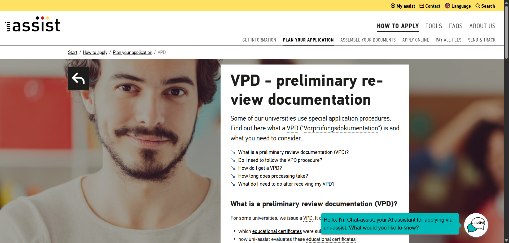
2. Plataforma
- Crear cuenta: Regístrate en el portal de Uni-Assist.
- Buscar la maestría: Utiliza el buscador para encontrar tu programa específico.
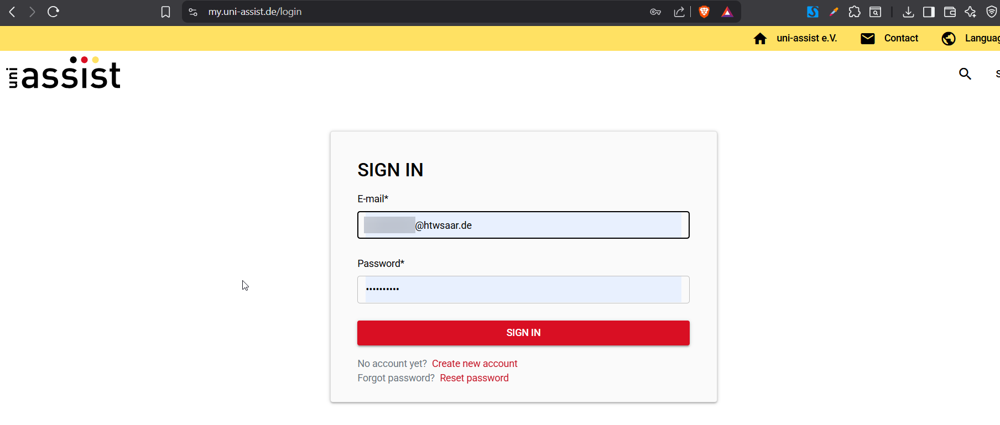
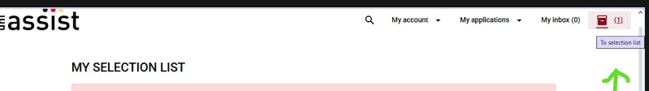
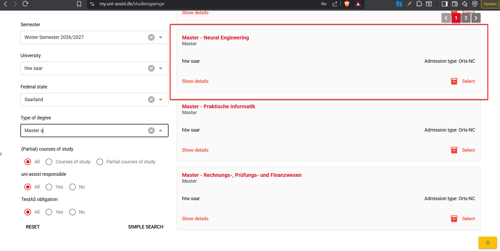
3. Datos para el llenado
Rellena cuidadosamente los datos solicitados en la plataforma con tu información personal y académica.
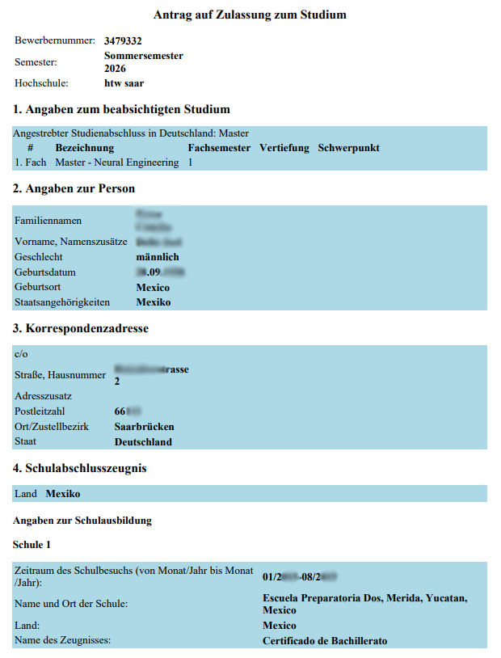
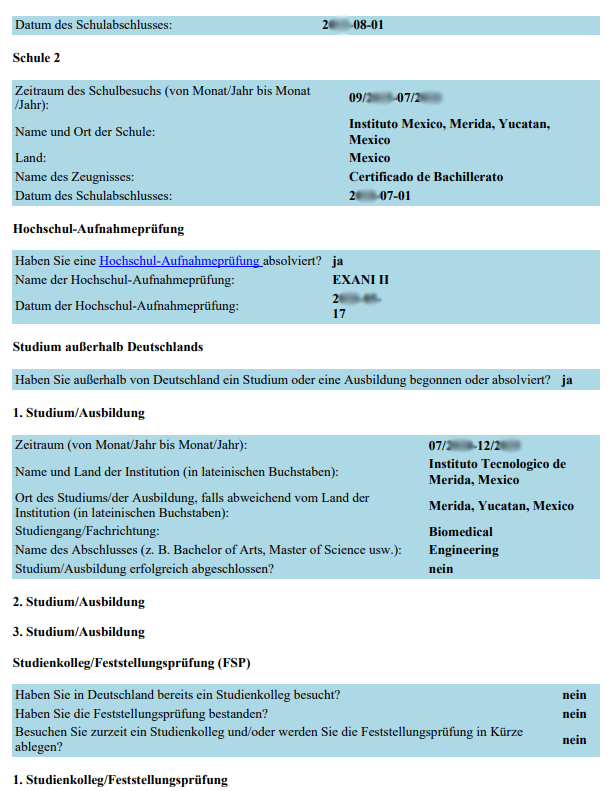
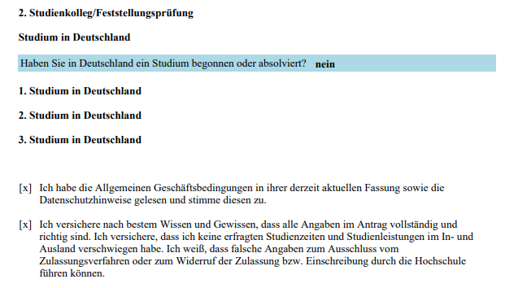
4. Preparar Documentos (I)
- Traducciones: Los documentos que estén en español necesitan traducción oficial.
- Letter of motivation: Se puede usar la plantilla oficial de EUROPASS.
- Curriculum Vitae (CV): Se hace con la plantilla de Europass. (Recuerda agregar tu residencia de la HTW en dado caso que la estés haciendo o la hayas hecho).
- Letter of internship: Es la carta de aceptación que ya les había enviado el Dr. Strauss.
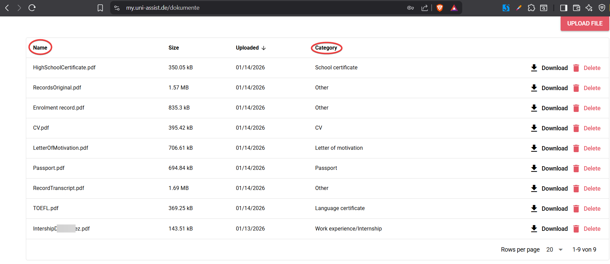
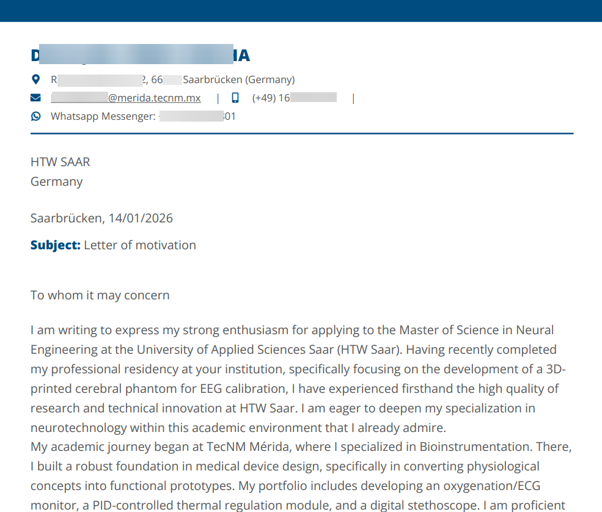
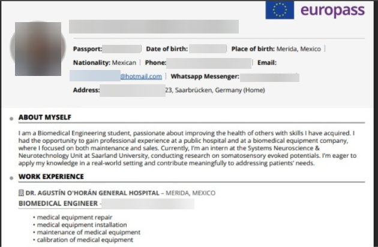
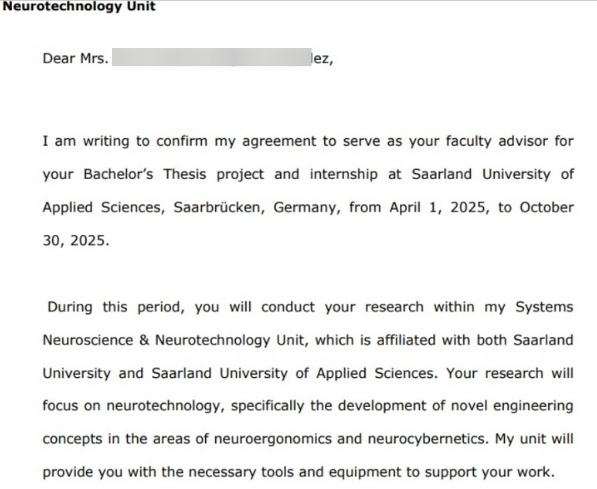
5. Récords Académicos
- Records original: Es el Kardex sin traducir para que se
vea el original. (Súbelo en la categoría:
Other). - Records Transcript: Es el Kardex traducido por el perito. (Súbelo
en la categoría:
Other).
Para contactar al perito, comunícate por WhatsApp al número indicado en la imagen. - High School certificate: Tu certificado de estudios de la
preparatoria. Es muy importante que tenga las fechas de inicio y término.
(Categoría:
School certificate).
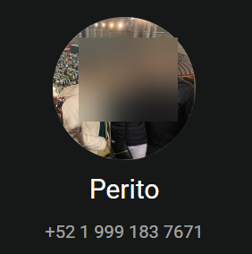
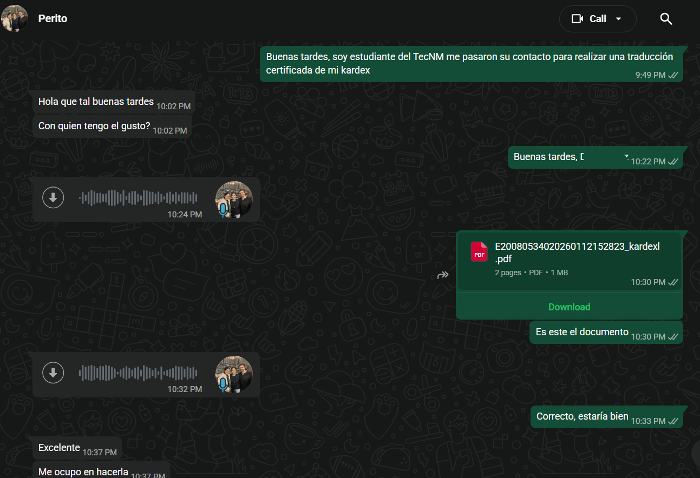
6. Otros Documentos Requeridos
- Certificado TecNM: Solicitar un certificado de estudios al TecNM
que diga expresamente "estudiante de biomédica". (Categoría:
Other). - Pasaporte: Copia de tu pasaporte vigente. (Categoría:
Passport).
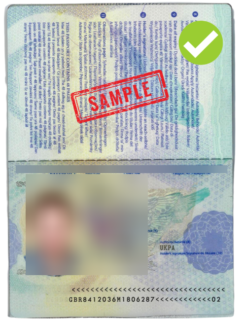
7. TOEFL
- TOEFL: Certificado oficial de tu nivel de inglés. (Categoría:
Language certificate).
Centro para presentar el TOEFL en Frankfurt →
Ver ubicación en Google Maps →
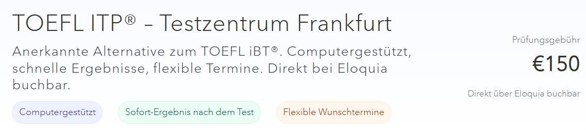
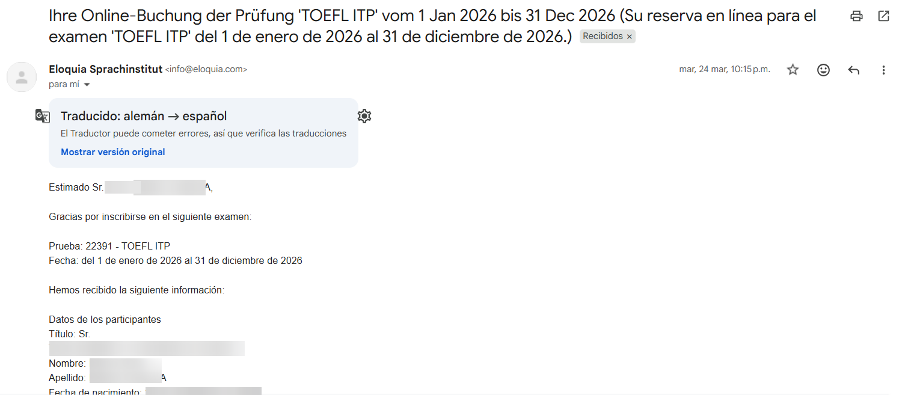
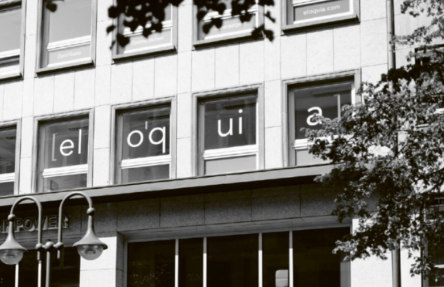